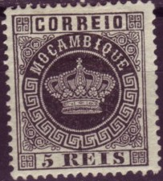
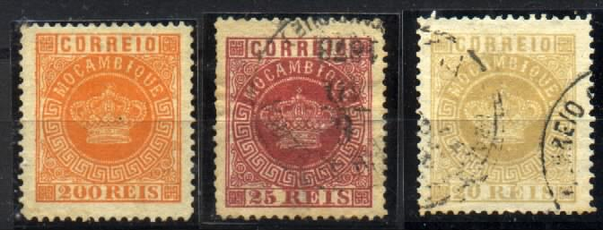
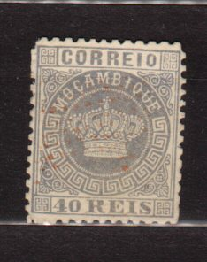

Return To Catalogue - Mozambique 1898-1920 - Miscellaneous - Lorenzo Marques - Mozambique Company 1892-1917 - Mozambique Company 1918 onwards and miscellaneous - Quelimane - Zambezia
Note: on my website many of the
pictures can not be seen! They are of course present in the
catalogue;
contact me if you want to purchase the catalogue.



5 r black 10 r yellow 10 r green (issued 1881/85) 20 r brown 20 r red (issued 1885) 25 r red 25 r lilac (issued 1881/85) 40 r blue (issued 1881/85) 40 r yellow 50 r green 50 r blue (issued 1881/85) 100 r lilac 200 r orange 300 r brown
These stamps have perforation 12 1/2 or 13 1/2. Stamps in similar designs were issued for most Portuguese colonies (country name different for each country), click here for more information on this issue.
Value of the stamps |
|||
vc = very common c = common * = not so common ** = uncommon |
*** = very uncommon R = rare RR = very rare RRR = extremely rare |
||
| Value | Unused | Used | Remarks |
| 5 r | ** | ** | |
| 10 r yellow | *** | *** | |
| 10 r green | ** | ** | |
| 20 r brown | *** | *** | |
| 20 r red | RR | RR | Prepared, but not issued. |
| 25 r red | * | * | |
| 25 r lilac | *** | *** | |
| 40 r blue | RR | RR | |
| 40 r yellow | *** | *** | |
| 50 r green | R | R | |
| 50 r blue | ** | ** | |
| 100 r | ** | ** | |
| 200 r | *** | *** | |
| 300 r | *** | *** | |
A misprint of the 40 r Mozambique stamp together with a stamp of Cape Verde exists:

(Misprint: Cabo Verde and Mocambique together, Image reproduced
with permission from: http://www.sandafayre.com )
Reprints exist of all the above stamps (made in 1885 an 1905).
(I've often seen the above cancel consisting of 4 parallel black
bars)
(Circular town and date cancel)

Stamp of Mozambique, used in Lourenzo
Marques
Fournier forgeries:
Fournier made forgeries of these stamps. He offers them in his 1914 pricelist: the stamps of the 1877 issue (9 values) are offered for 2 Swiss Francs and the others (5 values) for 1 Swiss Franc. The misprint is also offered by him (click here for more information).


50 r green Fournier forgery with "CORREIO DE BEIRA 6 10 1878
(MOCAMBIQUE)" cancel
The forged Fournier cancels "CORREIO DE BEIRA 6 10 1878
(MOCAMBIQUE)" and "CORREIO DE MOCAMBIQUE 1 9 1885"
How to identify a Fournier forgery? The central
circle with the name "MOCAMBIQUE" is a little bigger
than in the genuine stamps. At the top it touches the line above
it quite much. In the genuine stamps it touches it very lightly
or not at all. The upper right ornament (besides the
"Q" of "MOCAMBIQUE") is not symmetric as the
other ornaments. I have also noticed that the left upper ornament
(outside the circle, besides the "O" of
"MOCAMBIQUE"), is very close to the frame compared to a
genuine stamp. For pictures of this click
here. As a final test for the Mozambique stamps it can be
noticed that in the genuine stamps, there is a ","
below the "C" of "MOCAMBIQUE", in the
Fournier forgeries I can not detect any such comma.
The cancels used by Fournier were "CORREIO DE BEIRA 6 10
1878 (MOCAMBIQUE)" and "CORREIO DE MOCAMBIQUE 1 9
1885" (see image above). The dates are always the same, I
presume.
More information concerning these forgeries can be found at the
following website:
http://www.tabacaria.org/Selos/Coroa2/MozambFournier.htm.



Two 50 r forgeries with "50 REIS" too smalll (images
obtained from Gerhard Lang).
'Proof' of a Sperati forgery
The forger Sperati made a forgery of the 20 r red stamp. He also made 'proofs'.
Other forgery:
I don't know much about the above forgery, except that it is a forgery. Personally I think this could be a reprint.
Some deceptive 20 r forgeries exist, they are described in the book 'Forgeries of Portugal and Colonies' by D.J.Davies.
5 r black 10 r green 20 r red 25 r lilac 40 r brown 50 r blue 100 r brown 200 r grey 300 r orange
Value of the stamps |
|||
vc = very common c = common * = not so common ** = uncommon |
*** = very uncommon R = rare RR = very rare RRR = extremely rare |
||
| Value | Unused | Used | Remarks |
| 5 r | * | * | |
| 10 r | * | * | |
| 20 r | ** | ** | |
| 25 r | ** | ** | |
| 40 r | *** | ** | |
| 50 r | ** | * | |
| 100 r | *** | ** | |
| 200 r | R | *** | |
| 300 r | R | *** | |
Overprinted "JOURNAES" (Newspapers) and value (1893)
'2 1/2 2 1/2' on 40 r brown '2 1/2 REIS' on 40 r brown 5 on 40 r brown
Value of the stamps |
|||
vc = very common c = common * = not so common ** = uncommon |
*** = very uncommon R = rare RR = very rare RRR = extremely rare |
||
| Value | Unused | Used | Remarks |
| '2 1/2 2 1/2' on 40 r | R | R | |
| '2 1/2 REIS' on 40 r | RR | RR | Also exists with blue overprint |
| 5 on 40 r | RR | RR | Also exists with red or blue overprint |
Overprinted "PROVISORIO" and value (1893)
5 on 40 r brown
Value of the stamps |
|||
vc = very common c = common * = not so common ** = uncommon |
*** = very uncommon R = rare RR = very rare RRR = extremely rare |
||
| Value | Unused | Used | Remarks |
| 5 on 40 r | RR | RR | |
Overprinted "1195 CENTENARIO ANTONINO 1895" diagonally (1895)

5 r black (overprint in red) 10 r green 20 r red 25 r lilac 40 r brown 50 r blue 100 r brown 200 r grey 300 r orange
(Reduced sizes, forged overprints!)

Forged overprint made by Fournier (picture from a 'Fournier Album
of Philatelic Forgeries')
The above overprint is rare and has been forged (see pictures above).
Value of the stamps |
|||
vc = very common c = common * = not so common ** = uncommon |
*** = very uncommon R = rare RR = very rare RRR = extremely rare |
||
| Value | Unused | Used | Remarks |
| 5 r | R | R | |
| 10 r | RR | RR | |
| 20 r | RR | RR | |
| 40 r | RR | RR | |
| 50 r | RR | R | |
| 100 r | RR | RR | |
| 200 r | RR | RR | |
| 300 r | RR | RR | |
Overprinted "MOCAMBIQUE" and value (1898)
2 1/2 REIS on 20 r red 5 REIS on 40 r brown
Value of the stamps |
|||
vc = very common c = common * = not so common ** = uncommon |
*** = very uncommon R = rare RR = very rare RRR = extremely rare |
||
| Value | Unused | Used | Remarks |
| 2 1/2 r on 20 r | RR | R | |
| 5 r on 40 r | R | R | |
Surcharged with fancy letters (1902)
'65 REIS' on 20 r red '65 REIS' on 40 r brown '65 REIS' on 200 r grey '115 REIS' (in red) on 5 r black '115 REIS' on 50 r blue '130 REIS' on 25 r lilac '130 REIS' on 300 r orange '400 REIS' on 10 r green '400 REIS' on 100 r brown
Value of the stamps |
|||
vc = very common c = common * = not so common ** = uncommon |
*** = very uncommon R = rare RR = very rare RRR = extremely rare |
||
| Value | Unused | Used | Remarks |
| 65 r on 20 r | *** | *** | |
| 65 r on 40 r | *** | *** | |
| 65 r on 200 r | *** | *** | |
| 115 r on 5 r | *** | *** | |
| 115 r on 50 r | *** | *** | |
| 130 r on 25 r | *** | *** | |
| 130 r on 300 r | *** | *** | |
| 400 r on 10 r | *** | *** | |
| 400 r on 100 r | RR | RR | |
Surcharged with fancy letters and local overprint "REPUBLICA" (in red) (1915)
'115 REIS' (in red) on 5 r black
Value of the stamps |
|||
vc = very common c = common * = not so common ** = uncommon |
*** = very uncommon R = rare RR = very rare RRR = extremely rare |
||
| Value | Unused | Used | Remarks |
| 115 r on 5 r | R | R | |
Reprints exists of the values 5 r, 25 r, 40 r, 50 r, 100 r and 300 r (all without any surcharge or overprint), they were made in 1905.
Forged Fournier overprint of the 2 1/2 r overprint as it can be
found in the 'Fournier Album of Philatelic Forgeries'
These stamps exist overprinted for Lorenzo Marques: "L.MARQUES CENTENARIO DE S. ANTONIO MDCCCXCV".
These stamps exist overprinted "COMP a. DE MOCAMBIQUE" for the Mozambique Company.
2 1/2 r brown
Newspaper stamps in this design were issued for most Portuguese colonies (country name different for each country), click here for more information. A reprint of this stamp was made in 1905.
Value of the stamps |
|||
vc = very common c = common * = not so common ** = uncommon |
*** = very uncommon R = rare RR = very rare RRR = extremely rare |
||
| Value | Unused | Used | Remarks |
| 2 1/2 r | * | * | |
Surcharged in fancy letters (1902) '115 REIS' on 2 1/2 r brown
Value of the stamps |
|||
vc = very common c = common * = not so common ** = uncommon |
*** = very uncommon R = rare RR = very rare RRR = extremely rare |
||
| Value | Unused | Used | Remarks |
| 115 r on 2 1/2 r | *** | *** | |
Surcharged in fancy letters and "REPUBLICA" (in red) (1915)
'115 REIS' on 2 1/2 r brown (overprint downwards or upwards)
Value of the stamps |
|||
vc = very common c = common * = not so common ** = uncommon |
*** = very uncommon R = rare RR = very rare RRR = extremely rare |
||
| Value | Unused | Used | Remarks |
| 115 r on 2 1/2 r | * | * | Local overprint reading upwards or general "REPUBLICA" overprint reading downwards |


5 r yellow 10 r lilac 15 r brown 20 r grey 25 r green 50 r blue 75 r red 80 r green 100 r brown 150 r red on red 200 r blue on blue 300 r blue on red
The 25 r and 80r seem to have been reprinted in 1905.
Value of the stamps |
|||
vc = very common c = common * = not so common ** = uncommon |
*** = very uncommon R = rare RR = very rare RRR = extremely rare |
||
| Value | Unused | Used | Remarks |
| 5 r | * | * | |
| 10 r | * | * | |
| 15 r | *** | *** | |
| 20 r | *** | *** | |
| 25 r | ** | ** | |
| 50 r | *** | *** | |
| 75 r | *** | *** | |
| 80 r | *** | *** | |
| 100 r | *** | *** | |
| 150 r | R | R | |
| 200 r | R | R | |
| 300 r | R | R | |
Surcharged
(Sorry, no picture available yet, if anybody posesses a picture, please contact me!)
'50 reis' on 300 r blue on red
Value of the stamps |
|||
vc = very common c = common * = not so common ** = uncommon |
*** = very uncommon R = rare RR = very rare RRR = extremely rare |
||
| Value | Unused | Used | Remarks |
| 50 r on 300 r | RR | RR | This stamp was actually used in Lorenzo Marques |
Surcharged with fancy letters (1902)
'65 REIS' on 10 r lilac '65 REIS' on 15 r brown '65 REIS' on 20 r grey '115 REIS' on 5 r yellow '115 REIS' on 25 r green '130 REIS' on 75 r red '130 REIS' on 100 r brown '130 REIS' on 150 r red on red '130 REIS' on 200 r blue on blue '400 REIS' on 50 r blue '400 REIS' on 80 r green '400 REIS' on 300 r blue on red
Click here for stamps of other colonies with similar surcharges.
Value of the stamps |
|||
vc = very common c = common * = not so common ** = uncommon |
*** = very uncommon R = rare RR = very rare RRR = extremely rare |
||
| Value | Unused | Used | Remarks |
| 65 r on 10 r | *** | *** | |
| 65 r on 15 r | *** | *** | |
| 65 r on 20 r | *** | *** | |
| 115 r on 5 r | *** | *** | |
| 115 r on 25 r | *** | *** | |
| 130 r on 75 r | *** | *** | |
| 130 r on 100 r | R | R | |
| 130 r on 150 r | *** | *** | |
| 130 r on 200 r | *** | *** | |
| 400 r on 50 r | ** | ** | |
| 400 r on 80 r | ** | ** | |
| 400 r on 300 r | ** | ** | |
Surcharged with fancy letters and "REPUBLICA" (in red) (1915)

(With local 'REPUBLICA' overprint)
'115 REIS' on 5 r yellow '115 REIS' on 25 r green '130 REIS' on 75 r red '130 REIS' on 100 r brown '130 REIS' on 150 r red on red '130 REIS' on 200 r blue on blue '400 REIS' on 50 r blue '400 REIS' on 80 r green '400 REIS' on 300 r blue on red
Value of the stamps |
|||
vc = very common c = common * = not so common ** = uncommon |
*** = very uncommon R = rare RR = very rare RRR = extremely rare |
||
| Value | Unused | Used | Remarks |
With local 'REPUBLICA' overprint |
|||
| 115 r on 5 r | * | * | |
| 115 r on 25 r | * | * | |
| 130 r on 75 r | * | * | |
| 130 r on 100 r | * | * | |
| 130 r on 150 r | * | * | |
| 130 r on 200 r | ** | * | |
| 400 r on 50 r | ** | ** | |
| 400 r on 80 r | ** | ** | |
| 400 r on 300 r | ** | ** | |
| With general broad 'REPUBLICA' overprint | |||
| 115 r on 5 r | * | * | |
| 115 r on 25 r | * | * | |
| 130 r on 75 r | * | * | |
| 130 r on 150 r | * | * | |
| 130 r on 200 r | * | * | |
Surcharged with fancy letters and "Republica", value and bars (1925)
(No picture available yet, if anybody posesses a picture, please contact me!)
'40 c.' on '400 REIS' on 50 r blue '40 c.' on '400 REIS' on 80 r green
Value of the stamps |
|||
vc = very common c = common * = not so common ** = uncommon |
*** = very uncommon R = rare RR = very rare RRR = extremely rare |
||
| Value | Unused | Used | Remarks |
| 40 c on 400 r on 50 r | * | * | |
| 40 c on 400 r on 80 r | * | * | |
Mozambique 1898-1920 and miscellaneous
Stamps - Selos - Briefmarken - Timbres-Poste - Postzegels - Francobolli - Estampillas

{kind=link}
{kind=link}